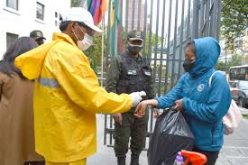
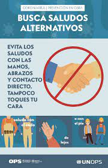
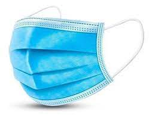
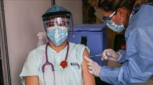
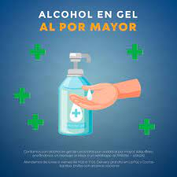
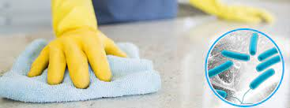
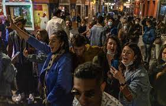

Medidas de Bioseguridad
Que es la bioseguridad y porque es tan importante?

Según la OMS, bioseguridad, es un conjunto de normas y medidas para proteger la salud del personal, frente a riesgos biológicos, químicos y físicos a los que está expuesto en el desempeño de sus funciones, como por ejemplo la pandemia COVID-19 supone un nuevo reto a la salud pública debido al mecanismo de transmisión del SARS-CoV-2, los protocolos y normas de bioseguridad hospitalaria se han ajustados bajo medidas estrictas de protección para el personal que integran la primera línea de atención, los profesionales de enfermería. En base a lo expuesto se realizó un análisis de la perspectiva respecto al protocolo de bioseguridad, equipo de protección personal, cuidado, autocuidado y temor al contagio por SARS-CoV-2 que enfrenta el personal de enfermería que laboran en la pandemia COVID-19. La investigación tuvo un enfoque cualitativa-fenomenológica, conformada por cinco
informantes voluntarios profesionales de enfermería, los datos se recolectaron por medio de entrevistas grabadas, éstas fueron transcritas y analizadas
en categorías, construyendo así resultados y conclusión de la investigación. Las entrevistas realizadas al personal de enfermería revelaron
preocupación respecto a la disponibilidad de insumos para protección y normas de bioseguridad ante el COVID-19, debido al desabastecimiento del
equipo de protección personal a nivel mundial, el incremento adquisitivo y la baja producción, siendo esto un peligro potencial para la salud física al
momento de la exposición para brindar los cuidados a los pacientes contagiados. Concluyendo que la disponibilidad o ausencia de EPP pone en juego
incluso hasta la calidad de atención que se pueda otorgar a los pacientes, demostrando la importancia de cuidar a quien en este momento tan crucial de
la historia de la humanidad, se encuentra ofrendando hasta su propia vida por salvar, la de los demás.
Como nos puede afectar?
Hay varia forma de como nos puede afectar como por ejemplo: nos puede afectar aumentando los contagios y las muertes al contagiar a otras personas ya sea por aire o por el contacto entre personas u objetos que tambien puede llevar a la muerte de esta persona, como por ejemplo el covid-19 que esta causando muchas muertes y contagios, o pueden sacar multa a una persona por no cumplir las norma asi como "ayudando" a que se propage mas la enfermedad. Tambien puede afectar economicamente los paises por las exportaciones que hacen hacia otros paises ya que muchos paises ya q su economia se basa mayormente en exportar sus productos a otras partes aumentando las probabilidades de propagar el contagio
Cuales son las medidas basicas de bioseguridad
Ahora en este siguiente cuadro mostraremos las siguientes medidas de bioseguridad basica adaptas para todos.
| evitar el contacto |
usar barbijo |
vacunarse |
usar alcohol para manos |
| Es posible que la persona pueda contagiarse a traves del contacto con un infectado y si no se lava o se usa alcohol para las manos el virus puede quedarse ahi por horas o por dias |
Su función es la de contener bacterias provenientes de la nariz y la boca, son utilizadas en espacios públicos ante brotes o epidemias de enfermedades transmitidas por vía respiratoria, o cuando el aire de un determinado lugar está contaminado. |
Ayuda a reforzar las defensa del cuerpo cuando sus defensa esta debil o ayudan a combatir contra enfermedades cuando el cuerpo no esta preparado para defender  |
El alcohol mata entre un 99,99% y un 99,999% de las bacterias en un minuto, y es un efectivo viricida y fungicida. Se caracteriza por la rapidez del comienzo de su acción (unos 15 segundos).  |
| lavarse las manos |
limpiar y desinfectar |
evitar aglomeraciones y los espacio mal ventilados |
Lávese las manos con frecuencia con agua y jabón por al menos 20 segundos, especialmente después de haber estado en un lugar público, o después de sonarse la nariz, toser o estornudar.
Es de suma importancia que se lave: Antes de comer o preparar la comida, antes de tocarse la cara, después de ir al baño, después de salir de lugares públicos, después de sonarse la nariz, toser o estornudar, después de manipular su mascarilla, después de cambiar pañales si tiene hijos, después de cuidar a una persona enferma, después de tocar animales o mascotas.
Si no dispone de agua y jabón, use un desinfectante de manos que contenga al menos un 60 % de alcohol. Cubra toda la superficie de las manos y frótelas hasta que las sienta secas.
Evite tocarse los ojos, la nariz y la boca sin antes lavarse las manos. |
Limpie las superficies de alto contacto a diario. Esto incluye las mesas, las manijas de las puertas, los interruptores de luz, los mesones, las barandas, los escritorios, los teléfonos, los teclados, los inodoros, los grifos, los lavamanos y los lavaplatos. |
Ya que puede tener un alto riesgo de contagios por las cantidas de persona y aumentar la tasa de infectados |
Para que se hizo esta pagina?
Esta pagina fue creada para ayudar a combatir en casos de pandemias o riesgos biologico. Como ejemplo como el covid-19, una enfermedad que aparicio en el año 2019 hasta el dia de ahora, a contagiado a 219M de personas y a causado la muerte a 4,55M. Con esto nos da a entender que cuando sucede un caso de pandemia la bioseguridad tiene que ser aplicada para todos sin execpiones para impedir que se propague mas y hacer controles mas extrictos. Por eso con esta pagina ayuda a todos a saber cuales son las medidas de bioseguridad basica que pueden ayudar a toda la comunidad para protegerse de peligros de pandemias
Sugerencias
Por favor deje sugerencias para mejorar esta pagina web
Pagina echa por Luis Fernando Daza Flores